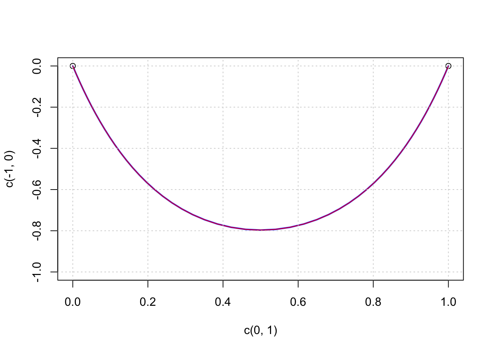

[NEW: Solving the catenary problem with scs]
I was thinking about a good test case to evaluate different versions of auglag, say with optim, nlminb, or lbfgs. I found the catenary curve to be a good one. The aim is to solve the “hanging chain” problem not as a differential equation, but as an optimization problem.
So we are assuming a chain of length 2 is bound to the points \(P1 = (0,1)\) and \(P2 = (1,1)\) with gravitational force acting in negative y-direction.
N <- 51 # no. of points
L <- 2 # total length of chain
h <- L / (N-1) # maximal length of each chain linkThe decision variables are the x- and y-coordinates of the beginning and end of the chain elements. We will look at two cases, with 51, 101, and 1001 points, that is 50 resp. 100 and 1000 chain links.
The parameter vector c(x, y) has dimension \(2 N\), the concatenated vector of x- and y-coordinates. The objective function means simply to minimize the potential energy.
fnobj <- function(p) {
sum(p[(N+1):(2*N)]) # sum(y)
}
grobj <- function(p) {
c(rep(0, N), rep(1, N))
}We will use the exaxt gradient, as it is so easy to write down.
We have two kinds of constraints, equality and inequality constraints. The equality constraints fix the beginning and end of the chain to the points \(P1\) and \(P2\). Therefore:
heq <- function(p) {
c(p[1], p[N]-1, p[N+1], p[2*N])
}
heq.jac <- function(x) pracma::jacobian(heq, x)The inequality constraints fix the length of the individual chain links to be \(h\) maximally, so the total length is \(L = (N-1) h = 2\).
hin <- function(p) {
x <- p[1:N]; y <- p[(N+1):(2*N)]
h^2 - diff(x)^2 - diff(y)^2
}
hin.jac <- function(x) pracma::jacobian(hin, x)The starting configuration will be with all links on the zero level.
x0 <- seq(0, 1, length.out=N)
p0 <- c(x0, rep(0, N))First we will solve it with alabama::auglag.
system.time(
sol1 <- alabama::auglag(p0, fnobj, grobj, hin=hin, heq=heq,
control.outer=list(trace=FALSE))
)## user system elapsed
## 7.952 0.529 8.593Let’s plot the generated curve to check plausibility for the moment.
The red curve is the solution generated by Ipopt (as a NEOS server) and coincides with the theoretical solution \[
f0(x) = 0.22964 \cosh(\frac{x - 0.5}{0.22964}) - 1.02603
\] The blue curve is the one generated above with auglag and optim as internal solver. The accuracy is not perfect, but relatively good. What is striking is that the solution is not symmetric as should be.
Let us compare this with the other solver, that is with nlminb as internal solver. Here are the results, displayed in a graph.
system.time(
sol2 <- alabama::auglag(p0, fnobj, hin=hin, heq=heq,
control.outer=list(method="nlminb", trace=FALSE))
)## user system elapsed
## 13.413 0.923 14.581We can see that the nlminb solver takes about 1.5 times longer, but the result is more accrate, but still not accurate. I admit I was surprised that nlminb worked that good.
To increase accuracy, we will solve the problem again with both solver, now with 101 points (or 100 chin links). Here I only show the results in one graph.
The line in blue shows the solution with optim, in magenta the solution obtained with nlminb. Obviously the outer loop breaks off too early. This probably can be amended by changing outer option, it is unclear (to me) which ones to change how.
Timings in these cases were 25-30 seconds.
I have generated a version of alabama::auglag with lbfgs::lbfgs as inner solver. lbfgs() should be more accurate and hopefully much faster.
source("auglag2.R")
system.time(
sol <- auglag_lbfgs(p0, fnobj, grobj, hin, hin.jac, heq, heq.jac)
)## Warning in if (bfgs_method == "lbfgs") {: the condition has length > 1 and
## only the first element will be used
## Warning in if (bfgs_method == "lbfgs") {: the condition has length > 1 and
## only the first element will be used
## Warning in if (bfgs_method == "lbfgs") {: the condition has length > 1 and
## only the first element will be used
## Warning in if (bfgs_method == "lbfgs") {: the condition has length > 1 and
## only the first element will be used
## Warning in if (bfgs_method == "lbfgs") {: the condition has length > 1 and
## only the first element will be used
## Warning in if (bfgs_method == "lbfgs") {: the condition has length > 1 and
## only the first element will be used## user system elapsed
## 161.250 10.350 172.304We see that even with 50 points the result is most accurate, comparable to the solution found by Ipopt. What is disappointing is the very long running time. I still have to find out what actually makes it so slow.
The solution is not brittle in the sense that with 100 points the same solution comes out, though it takes even much longer.
It would be natural to solve the catenary problem with augmented Lagrangian procedure auglag() from the nloptr package, either with gradient through BFGS or without gradients using the COBYLA approach. Unfortunately, I have not been able to call nloptr::auglag() correctly.
Instead I will apply the NLopt routine SLSQP directly. slsqp() realizes “sequential quadratic programming” (SQP) and appears thus to be specially appropriate for a problem with quadratic objective and/or constraints.
# require(nloptr, quietly=TRUE)
system.time(
sol <- nloptr::slsqp(p0, fnobj, gr=grobj,
hin=hin, hinjac=hin.jac,
heq=heq, heqjac=heq.jac)
)## user system elapsed
## 3.635 0.198 3.909This solves the catenary problem as exactly as auglag_lbfgs() above, but in much less time, as can be seen from the following plot.
The solver ‘slsqp()’ will solve the catenary problem in about 25 seconds. For decidedly more than 100 points the solver will stop working and return the starting point.
x <- sol$par[1:N]; y <- sol$par[(N+1):(2*N)]
plot(c(0,1), c(-1,0), type='n')
lines(x, y, col="blue", lwd=2)
points(c(0, 1), c(0, 0))
curve(0.22964*cosh((x-0.5)/0.22964)-1.02603, 0, 1,
col="red", add=TRUE)
grid()
By the way: Trying to utilize packages ‘Rsolnp’ or ‘NlcOptim’ was entirely in vain. The results were either completely wrong or returned simply the starting point. Probably calling the procedures was done incorrectly, though I was unable to identify a correct call in several tries.
The catenary problem is formulated as a linear objective with quadratic constraints, QCLP. As there are no linear solvers with such constraints, the next step up would be to handle it as quadratic with quadratic constraints, QCQP. Quadratic solvers in R do not allow for quadratic constraints, so the next logical step is solving it as a convex problem with convex constraints.
A quite powerful solver for these kinds of problems is ECOS, an embedded conic solver, integrated with R in the ECOSolver package. Using the interface of ECOSolver can get quite complicated. Stephen Boyd and colleagues are building another package cvxr that will define an optimization modeling language, maybe a bit similar to Julia’s JuMP module.
require(Matrix, quietly=TRUE)
require(ECOSolveR, quietly=TRUE)
N <- 51 # 2N + 1 variables
L <- 1; h <- 2/(N-1)We will add one more variable \(x_0\) resp. \(x_{2N+1}\) to the coordinates in order to be able to define the conic inequality constraints. Therefore, the objective function is
c <- c(rep(0,N), rep(1,N), 0)The extra variable will have a fixed value of \(h\). Together with fixing the left and right end points of the chain we can define the following sparse matrix \(A\) and RHS \(b\):
A <- Matrix(0, nrow=5, ncol=2*N+1, sparse=TRUE)
A[1, 2*N+1] <- 1 # x[2*N+1] = 1
A[2, 1] <- 1; A[3, N] <- 1 # x[1] = 0; x[N] = 1
A[4, N+1] <- 1; A[5, 2*N] <- 1 # y[1] = 1; y[N] = 1
b = c(h, 0, 1, 1, 1)The inequality constraints are all of the form \((x_{i+1}-x_i)^2 + (y_{i+1}-y_i)^2 \le h\). For a “conic formulation” we need a linear functional \(G_i\) such that (remember, \(y_i = x_{N+i}\)) \[ G_i(x) = (h, x_{i+1}-x_i, x_{N+i+1}-x_{N+i}) = (h, X) \in K \] as being an element of cone \(K\) means \(h \ge ||X||_2\) – or: the \(i\)-th chain link is smaller than \(h\). The following sparse matrix \(G\) defines \(N-1\) such submatrices \(G_i\), each three rows ans \(2N+1\) columns.
G <- Matrix(0, nrow=3*(N-1), ncol=2*N+1, sparse=TRUE)
for (i in 1:(N-1)) {
j <- 3*(i-1) + 1
G[j, 2*N+1] <- -1
G[j+1, i] <- -1; G[j+1, i+1] <- 1
G[j+2, N+i] <- -1; G[j+2, N+i+1] <- 1
}In the conic formulation \(G_i(x) \le{}_K h\) we do not need the \(h\)s, so the right hand side is:
H <- rep(0, 3*(N-1))and as each three rows belong together, the dims argument is:
quad <- as.integer(rep(3, N-1))Now we have gathered all puzzle pieces and call the ECOS solver:
system.time(
sole <- ECOS_csolve(c, G, H, dims=list(q=quad), A, b)
)## user system elapsed
## 0.003 0.000 0.012The solution exactly follows the theoretical solution (the red line).
xs <- sole$x[1:N]; ys <- sole$x[(N+1):(2*N)]
plot(c(0, 1), c(0, 1), type='n')
lines(xs, ys, col="blue", lwd=2)
points(c(0, 1), c(1, 1))
curve(0.22964*cosh((x-0.5)/0.22964)-0.02603, 0, 1,
col="red", add=TRUE)
grid()The timings are 2/3/36 milliseconds for 50/100/1000 chain links.
SCS (Conic Splitting Solver) is another of the solvers developed by Stephen Boyd and colleagues at Stanford University. An R interface is available in the scs package maintained by Florian Schwendinger.
The API of scs() is similar to that one for ECOS_csolve() except that the matrices A and G are combined into one, and then necessarily also b and h. So with all the (sparse) matrices and vectors defined in the section on the ECOSolveR package we can call scs() in just one line.
library(scs)
system.time(
sol_scs <- scs(A=rbind(A, G), b=c(b, H), obj=c, cone=list(f=nrow(A), q=quad))
)## user system elapsed
## 0.005 0.001 0.014str(sol_scs)## List of 4
## $ x : num [1:103] 1.16e-07 9.13e-03 1.86e-02 2.85e-02 3.88e-02 ...
## $ y : num [1:155] 712.94 5.74 -5.74 -25.5 -25.5 ...
## $ s : num [1:155] 4.14e-15 -8.60e-18 6.22e-18 7.42e-17 -5.77e-17 ...
## $ info:List of 12
## ..$ iter : int 320
## ..$ status : chr "Solved"
## ..$ statusVal: int 1
## ..$ pobj : num 28.2
## ..$ dobj : num 28.2
## ..$ resPri : num 6.38e-07
## ..$ resDual : num 7.48e-07
## ..$ resInfeas: num 0.438
## ..$ resUnbdd : num NaN
## ..$ relGap : num 2.45e-08
## ..$ setupTime: num 0.938
## ..$ solveTime: num 3.1The timings for scs are 2/10/280 for 50/100/1000 links. The RMS error (‘root mean square error’) for 50 links is 0.0001514347 compared to 0.0001508338 for ECOS.
MOSEK is an interior-point solver for large-scale optimization problems. MOSEK is capable of efficiently solving LP, QP, SOCP, and SDP problems. MOSEK is commercial, but there are academic licenses available.
Package Rmosek provides an R interface for the MOSEK program if MOSEK itself is already installed on the system. Setting up a problem in a form appropriate for sending it to MOSEK is still quite complicated as can be seen from the following code handling the catenary problem for Rmosek and MOSEK.
require(Matrix, quietly=TRUE)
require(Rmosek, quietly=TRUE)
N <- 51 # 2N + 2N-2 + N-1 variables
L <- 1; h <- 2/(N-1)
# model list cp with cp$c the linear objective
cp <- list(sense="min") # minimization problem
cp$c <- c(rep(0,N), rep(1,N), rep(0,3*N-3))
# sparse matrix defining the differences x_i - x_{i+1}
A <- Matrix(0, nrow=2*N-2, ncol=5*N-3, sparse=TRUE)
for (i in 1:(N-1)) {
A[i,i] <- 1; A[i,i+1] <- -1; A[i,2*N+i] <- 1
A[N-1+i,N+i] <- 1; A[N-1+i,N+i+1] <- -1; A[N-1+i,3*N-1+i] <- 1
}
cp$A <- A
# rhs of the linear equalities defined through matrix A
cp$bc <- rbind(blc=rep(0,2*N-2), buc=rep(0,2*N-2))
# bounds on the free variables
cp$bx <- rbind(blx=c(0,rep(-Inf,N-2),1,0,rep(-Inf,N-2),0,rep(-Inf,2*N-2),rep(h,N-1)),
bux=c(0,rep( Inf,N-2),1,0,rep( Inf,N-2),0,rep( Inf,2*N-2),rep(h,N-1)))
# define the cones h >= ||(x_i-x_{i+1})^2 + (y_i-y_{i+1})^2||
co <- cbind(list("QUAD", c(4*N-2+1, 2*N+1, 3*N)))
for (i in 2:(N-1)) {
co <- cbind(co, list("QUAD", c(4*N-2+i, 2*N+i, 3*N-1+i)))
}
cp$cones <- co
system.time(r <- mosek(cp, opts=list(verbose=1)))## user system elapsed
## 0.017 0.009 0.073Plotting the solution r$sol$itr$xx against the theoretical solution as above generates the the same plots as above. MOSEK solves the catenary problem with 50/100/1000 points in 4/5/33 microseconds.
The Julia ‘ECOS.jl’ package provides a wrapper for the interior-point solver ECOS for second-order cone problems. And ‘JuMP’ provides a domain-specific modeling language for optimization problems in Julia. It can apply commercial and open source solvers.
The following is a formulation of the catenary problem in JuMP, calling ECOS as conic solver. A correct and highly accurate result is returned within 0.0065/0.0157/0.4158 seconds for 50/100/1000 points.
using JuMP
using ECOS
n = 51
L = 2; h = L/(n-1)
m = Model(solver=ECOSSolver())
@variable(m, x[1:(2*n)] >= 0.0)
@objective(m, Min, sum{x[i], i=(n+1):(2*n)})
@constraints(m, begin
x[1] == 0; x[n] == 1
x[n+1] == 1; x[2*n] == 1
end)
for i in 1:(n-1)
A = zeros(2, 2*n)
A[1, i] = -1; A[1, i+1] = 1
A[2, n+i] = -1; A[2, n+i+1] = 1
@constraint(m, soc, norm(A*x) <= h)
end
status = solve(m)param N := 100; # number of chainlinks
param L := 1; # difference in x-coords of endlinks
param h := 2*L/N; # length of each link
var x {0..N}; # x-coordinates of endpoints of chainlinks
var y {0..N}; # y-coordinates of endpoints of chainlinks
minimize pot_energy: sum{j in 1..N} (y[j-1] + y[j])/2;
subject to x_left_anchor: x[0] = 0;
subject to y_left_anchor: y[0] = 0;
subject to x_right_anchor: x[N] = L;
subject to y_right_anchor: y[N] = 0;
subject to link_up {j in 1..N}: (x[j] - x[j-1])^2 + (y[j] - y[j-1])^2 <= h^2;
let {j in 0..N} x[j] := j*L/N;
let {j in 0..N} y[j] := 0;
solve;
printf {j in 0..N}: "%10.5f %10.5f \n", x[j], y[j]